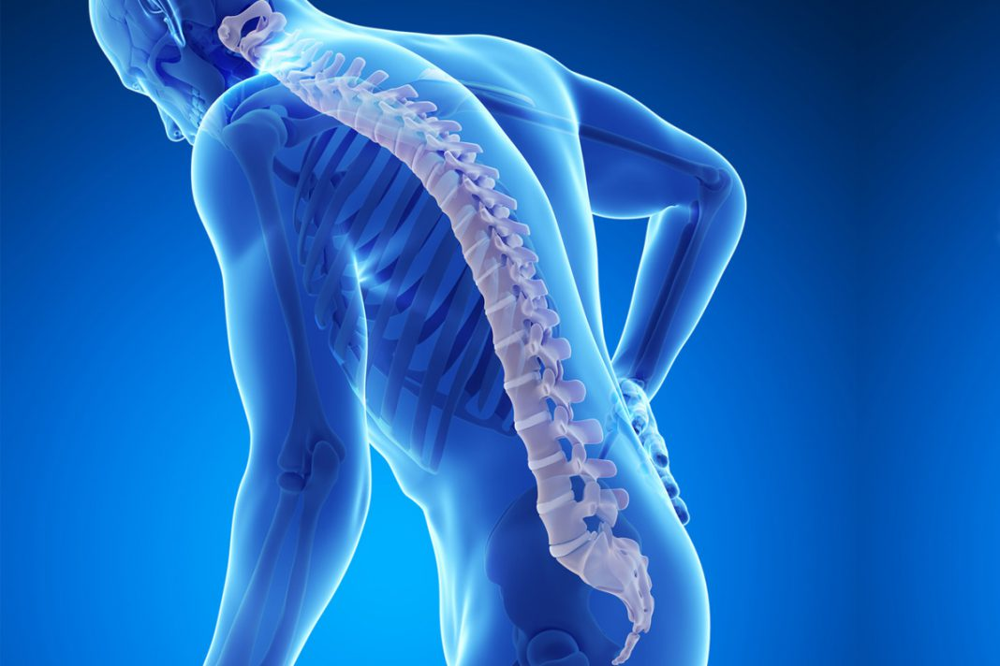

Se define como acido a la sustancia que, en solución desprende protones [H+]
¿Cómo afecta la acidez a nuestro organismo? Las enzimas: Son las pequeñas obreras que originan todas las transformaciones bioquímicas que tienen lugar en el cuerpo y de las que depende el buen funcionamiento de algunos órganos, para que las enzimas funcionen correctamente necesitan un entorno óptimo de pH, ya que de lo contrario el cuerpo ya no puede seguir funcionando, pudiendo ocasionar incluso la muerte. En los tejidos: Irritan los órganos con los que se hallan en contacto, promoviendo procesos inflamatorios que pueden condicionar dolor, perdida de función o lesiones en los tejidos. Desmineralización: Toda persona que se acidifica se desmineraliza pues el cuerpo debe ceder los minerales básicos para neutralizar los ácidos. Esto puede afectar a cualquier órgano, debido a que los minerales se encuentran en todos los tejidos. En el sistema musculo-esquelético: Los huesos se descalcifican, pierden su resistencia y su flexibilidad, hay disminución de masa ósea, inflamación a nivel de las articulaciones y fracturas a nivel de los cuerpos vertebrales.  Respiración: Los pulmones no tienen la capacidad de eliminar todo el CO2 producido por el organismo La mayor amenaza a la estabilidad del ph está representada por los ácidos que producen durante procesos metabólicos de nuestro organismo.
Con la finalidad de explicar las diversas propiedades que presentan los acidos, es preciso abordar diversos enfoques teóricos de quienes han realizado planteamientos de función de la composición y estructura de las sustancias.
¿Qué es un enlace covalente?
(Quiroz, 2014)
|